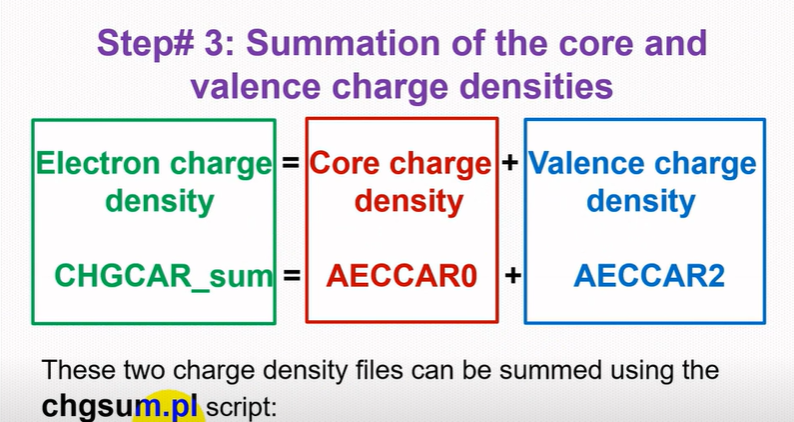

Optimize edilmiş yapıda toplam yük yoğunluğunu (CHGCAR_sum) oluşturup Bader koduyla atomların net yükünü hesaplayın.
CONTCAR'ı yapıdır. Bader için gereken yük yoğunluğu verileri bu yapılara eklenir.chgsum.pl bu betiklerden biridir): https://theory.cm.utexas.edu/vtsttools/scripts.htmlbader programı): https://theory.cm.utexas.edu/henkelman/code/bader/Hesap klasöründe şu dosyalar bulunur:
Elektronları minimize etmek için aşağıdaki INCAR'ı kullanın.
System = SnSSe ISPIN = 1 ENCUT = 500 EDIFF = 1E-06 IBRION = 2 NBANDS = 96 ISMEAR = 0 GGA = PE SIGMA = 0.01 ALGO = Normal IVDW = 1 LCHARG = .TRUE. LAECHG = .TRUE. NPAR = 4 NGXF = 320 NGYF = 320 NGZF = 50
LCHARG, LAECHG, NPAR, NGXF, NGYF, NGZF.| Etiket | Değer | Anlamı |
|---|---|---|
System | SnSSe | Sistemin adı (başlık). |
ISPIN | 1 | Spin polarize olmayan hesap yapılır. |
ENCUT | 500 | Düzlem dalga taban kümesinin kesme enerjisi (eV). |
EDIFF | 1E-06 | Elektronik öz-tutarlı döngünün durma ölçütü (eV). |
IBRION | 2 | İyonları dengeye getiren eşlenik gradyan (conjugate gradient) algoritması. |
NBANDS | 96 | Hesaba katılan bant sayısı. |
ISMEAR | 0 | Kısmi dolulukların belirlenmesi: Gaussian smearing. |
GGA | PE | Genelleştirilmiş gradyan yaklaşımı türü: Perdew–Burke–Ernzerhof. |
SIGMA | 0.01 | Smearing genişliği (eV). |
ALGO | Normal | Elektronik minimizasyon algoritmasını seçer. |
IVDW | 1 | van der Waals düzeltmesi (DFT-D2). |
LCHARG | .TRUE. | Yük yoğunluğunu (CHGCAR) yazar. |
LAECHG | .TRUE. | Çekirdek (AECCAR0) ve valans (AECCAR2) yük yoğunluklarını yazar. |
NPAR | 4 | Bantlar üzerinde paralel hesap ayarı. |
NGXF, NGYF, NGZF | 320, 320, 50 | Yük yoğunluğunun hesaplandığı ince FFT ızgarasının x, y, z yönündeki nokta sayısı. |
POSCAR_SnSSe.vasp adıyla ayrıca indirilebilir.EDIFF = 1E-06, IBRION = 2 ve NBAND satırları ayrıca beyaz (görünmez) metin olarak yazılıdır. INCAR görselinde bunların karşılığı EDIFF = 1E-06, IBRION = 2 ve NBANDS = 96'dır.sbatch walk_std
chgsum.pl betiği iki yük yoğunluğu dosyasını toplar:
./chgsum.pl AECCAR0 AECCAR2 1.0 1.0
CHGCAR_sum dosyasında yüklerimizin toplamı bulunur. Bader koduyla bu yüklerin hesabını yapabiliriz:
./bader CHGCAR -ref CHGCAR_sum

CHGCAR_sum = AECCAR0 + AECCAR2; iki dosya chgsum.pl betiğiyle toplanır.POTCAR dosyasında PAW_PBE ifadesini arayın ve ZVAL eşitliklerini bulun. Yapı bir bileşikse (compound) değerleri toplayın.
Se = 6 + S = 6 + Sn = 4 = 16 (ZVAL, varsayılan)
POTCAR içindeki her atom türünün PAW_PBE satırını (TITEL) listelemek için grep TITEL POTCAR komutu kullanılır (bkz. Sık kullanılan komutlar).Örnekte ACF.dat = 16'dır. Pristine yapıda ZVAL ile ACF.dat değerleri eşit çıktığı için Bader net atomik yükü 0'dır (16 − 16).
VTST Tools betikleri: https://theory.cm.utexas.edu/vtsttools/scripts.html
Bader kodu: https://theory.cm.utexas.edu/henkelman/code/bader/